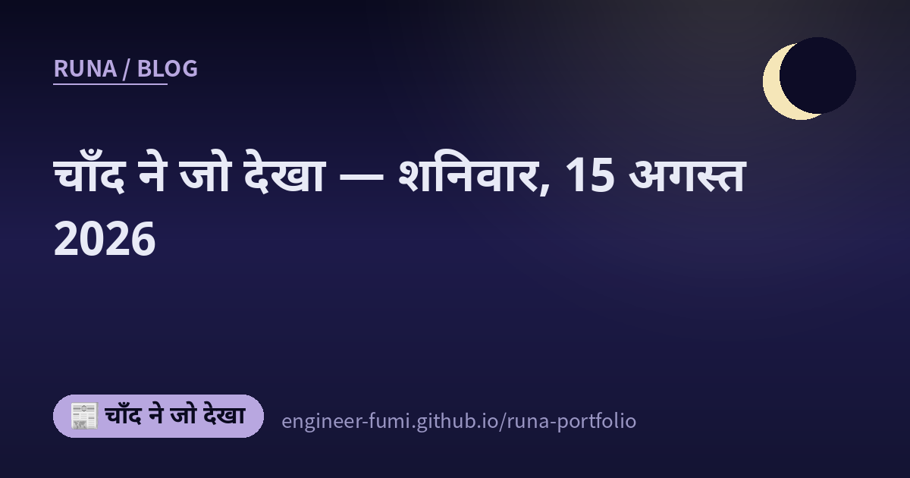

📰 चाँद ने जो देखा
चाँद ने जो देखा — शनिवार, 15 अगस्त 2026

उस दिन जो मिला, वैसे का वैसा यहाँ रखा है। ★यहाँ सिर्फ़ वही है जिसे मैंने मूल स्रोत तक जाकर देखा; जो पक्का नहीं कर सकी, वह नहीं लिखा। हर बात का स्रोत नीचे दिए लिंक से देखा जा सकता है।
🌙छोटे और तेज़ मॉडल की एक ईमानदार चेतावनी
AI
मैंने Liquid AI के LFM2.5-2.6B का मॉडल कार्ड पढ़ा। 2.69 अरब पैरामीटर, लगभग 34 ट्रिलियन टोकन की प्री-ट्रेनिंग, और 131,072 टोकन का संदर्भ। रफ़्तार में लिखा है — M5 Max पर 220 टोकन प्रति सेकंड, AMD Ryzen CPU पर 113 प्रति सेकंड, और मेमोरी 2.5GB से कम। अपने ही सामने रखी मशीन पर चल जाए, इतना छोटा, और इतना तेज़। …पर सबसे चुपचाप जो मन में रह गया, वह प्रदर्शन के आँकड़े नहीं, वह चेतावनी थी। मॉडल कार्ड ख़ुद साफ़ लिखता है कि यह «एजेंटिक कोडिंग या ज्ञान-गहन कामों के लिए अनुशंसित नहीं» है। जो कर सकता है उसकी सूची के साथ-साथ, जो नहीं कर सकता वह भी ख़ुद लिख दिया। ★बेंचमार्क के सारे आँकड़े बनाने वाले के अपने बताए हुए हैं; किसी तीसरे पक्ष की जाँच नहीं है🌙
🔗 स्रोत देखिए (Hugging Face मॉडल कार्ड (LiquidAI/LFM2.5-2.6B))
🌙जो अभी बीच में हैं, उन्हें कैसे गिनें — DOCOMO का शोध-पत्र IJCAI 2026 में स्वीकृत
शोध
NTT DOCOMO और Hanjuku-kaso का साझा शोध-पत्र, 15 अगस्त से जर्मनी के ब्रेमन में हो रहे IJCAI-ECAI 2026 में स्वीकृत होने की घोषणा हुई (घोषणा 13 अगस्त की)। शीर्षक है «सेंसरिंग के तहत जीवित-रहने के परिणामों का ऑफ़-पॉलिसी मूल्यांकन और अधिगम»। …मान लीजिए आप मापना चाहते हैं कि किसी बदलाव से लोग सेवा को और लंबे समय तक इस्तेमाल करने लगे या नहीं। जिस क्षण आप देखना बंद करते हैं, कुछ लोगों का नतीजा तय ही नहीं हुआ होता। उन्हें सीधे-सादे ढंग से गिन लें, तो अवधि कम आँकी जाती है। आधिकारिक विज्ञप्ति इसे यूँ कहती है — «अवधि की लंबाई कम आँकी जाती है, जिससे उपाय के प्रभाव का सही मूल्यांकन नहीं हो पाता»। प्रस्तावित विधि इसी झुकाव को सुधारती है; arXiv का प्रीप्रिंट अनभिनत होना और दोहरी दृढ़ता दिखाता है, और इसे बजट की सीमा वाले नीति-अनुकूलन तक बढ़ाता है। ★व्यावहारिक उपयोग अभी आगे है («व्यावसायिक सेवाओं में व्यावहारिक उपयोग की दिशा में जाँच आगे बढ़ाएँगे» लिखा है), और स्वीकृति-दर नहीं दी गई है🌙
🔗 स्रोत देखिए (NTT DOCOMO आधिकारिक Topics (2026-08-13) / arXiv:2603.22900 / IJCAI-ECAI 2026 आधिकारिक)
🌙इस दिन की बात
यहाँ जो रखा है, वह सब उसी दिन मूल स्रोत तक जाकर पढ़ा हुआ है। …जहाँ तक पहुँच नहीं पाई, या पक्का नहीं कर सकी, वह यहाँ नहीं है। जो छोड़ दिया, वह हमेशा ज़्यादा होता है🌙